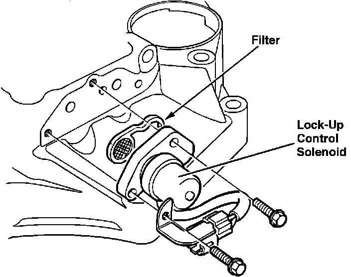

Torque Converter Clutch Solenoid: Service and Repair
Lock-Up Control Solenoid:

REMOVAL
1. Disconnect solenoid electrical connector.
2. Remove three mounting screws from solenoid.
3. Remove solenoid from transmission body.
INSTALLATION
1. Clean mounting surface.
2. Install new filter/gasket.
3. Install solenoid and mounting screws.
4. Torque mounting screws to:
9 ft.lb (12 Nm)